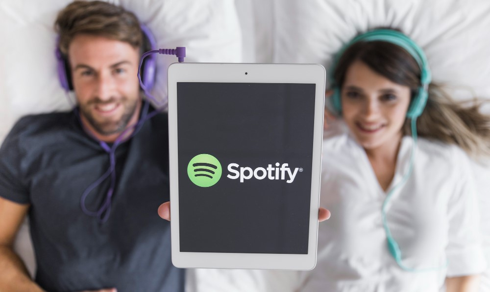

Music is the universal language of the soul, and Spotify has become the go-to platform for millions of music lovers worldwide. Whether you’re a casual listener or a hardcore music enthusiast, Spotify has something for everyone. But let’s be honest—while the free version is great, Spotify Premium is where the real magic happens. Imagine having a backstage pass to your favorite concert, but instead of just one show, it’s for every song, album, and playlist you’ve ever dreamed of. That’s spotify with premium apk in a nutshell. In this article, we’ll dive into all the positive reasons why upgrading to Spotify Premium is a game-changer for your music experience. And don’t worry, we’ll keep it simple, fun, and easy to understand—no fancy jargon here!
Let’s start with the most obvious perk: no ads. If you’ve ever been jamming out to your favorite playlist only to be rudely interrupted by an ad for something you don’t even care about, you know the struggle. With Spotify Premium, those pesky ads are a thing of the past. It’s like having a VIP ticket to a concert where no one yells, “But wait, there’s more!” in the middle of your favorite song. You get uninterrupted music from start to finish, and honestly, isn’t that what we all deserve?
Picture this: you’re on a long flight, cruising through the clouds, and suddenly you realize you forgot to download your playlist. With Spotify Premium, that’s never a problem. You can download your favorite songs, albums, and playlists directly to your device. Whether you’re traveling, commuting, or just in an area with spotty Wi-Fi, your music is always with you. It’s like having a portable jukebox that doesn’t require quarters. How cool is that?
Ever been stuck listening to a song you’re just not feeling? With the free version of Spotify, you’re limited to a certain number of skips per hour. But with Spotify Premium, you can skip to your heart’s content. Discover new artists, explore different genres, and curate the perfect playlist without any restrictions. It’s like having a remote control for your music—press skip whenever you want, no questions asked.
If you’re someone who appreciates the finer details in music, Spotify Premium’s high-quality audio is a dream come true. The free version streams at 96 kbps, which is fine for casual listening, but Premium takes it up a notch with 320 kbps streaming. This means you’ll hear every beat, every note, and every lyric with crystal-clear clarity. It’s like upgrading from a blurry photo to a high-definition masterpiece. Your ears will thank you.
With the free version of Spotify, you’re limited to shuffling through playlists and albums. But with Spotify Premium, you have full control. Want to listen to that one specific song on repeat for hours? Go ahead. Want to start an album from the beginning instead of shuffling? No problem. Premium gives you the freedom to play any song, anytime, anywhere. It’s like having a genie in a bottle, but instead of three wishes, you get unlimited music.
Spotify is known for its incredible playlist features, and Premium takes it to the next level. You can create as many playlists as you want, add as many songs as you like, and share them with friends and family. Whether it’s a workout playlist to get you pumped or a chill vibe for a lazy Sunday, the possibilities are endless. Plus, you can collaborate on playlists with others, making it a fun way to discover new music together. It’s like being a DJ, but without the pressure of keeping the dance floor packed.
One of Spotify’s standout features is its ability to curate music just for you. With Spotify Premium, you get access to personalized playlists like Discover Weekly, Release Radar, and Daily Mixes. These playlists are tailored to your taste, introducing you to new artists and songs you’re likely to love. It’s like having a personal music assistant who knows your taste better than you do. And let’s be real, who doesn’t love a good surprise?
Not sure if Spotify Premium is for you? No worries! The best part about upgrading is that there’s no long-term commitment. You can cancel your subscription anytime if you feel it’s not worth it (though we highly doubt you’ll want to). It’s like test-driving a luxury car without the pressure of buying it. Give it a try, and if you love it as much as we think you will, you can keep the party going.
Spotify Premium isn’t just for individuals. If you’ve got a family or you’re a student, Spotify has got you covered. The Family Plan allows up to six people to enjoy Premium features at a discounted rate. It’s perfect for households where everyone has different musical tastes (because let’s face it, not everyone appreciates your ’80s power ballads). And for students, the Student Plan offers all the Premium perks at a fraction of the cost. It’s like getting a VIP experience on a budget.
Spotify Premium users often get access to exclusive content, such as podcasts, live sessions, and early releases from their favorite artists. Imagine being one of the first to hear a new album or getting behind-the-scenes insights from your favorite musicians. It’s like being part of an exclusive club where the perks just keep coming.
With Spotify Premium, you can seamlessly switch between devices without missing a beat. Start listening on your phone, continue on your laptop, and finish on your smart speaker—all without skipping a song. It’s like having a personal soundtrack that follows you wherever you go. And let’s be honest, in today’s world of multitasking, this feature is a lifesaver.
While this might not be a direct benefit for you, it’s worth mentioning that Spotify Premium helps support the artists you love. Premium users contribute more to artist royalties compared to free users. So, by upgrading, you’re not just enhancing your own experience—you’re also giving back to the music community. It’s like buying a concert ticket and knowing you’re helping the band keep doing what they love.
When you consider all the features you get, Spotify Premium is incredibly affordable. For less than the cost of a cup of coffee per day, you get ad-free listening, offline downloads, high-quality audio, and so much more. It’s a small price to pay for a world of music at your fingertips. Plus, with the occasional promotions and discounts, you might even snag an even better deal. Who doesn’t love a good bargain?
Whether you’re working out, studying, relaxing, or hosting a party, Spotify Premium has the perfect soundtrack for every moment. With millions of songs and curated playlists, you’ll never run out of options. It’s like having a musical Swiss Army knife—ready for anything life throws at you.
At the end of the day, Spotify Premium isn’t just about music—it’s about enhancing your life. Music has the power to uplift, inspire, and connect us, and Spotify Premium ensures you get the best possible experience. Whether you’re discovering new favorites or revisiting old classics, every moment is better with Premium.
If you’re still on the fence about upgrading to Spotify Premium, let me ask you this: why wait? With all the incredible features and benefits, it’s a no-brainer for anyone who loves music. Whether you’re a casual listener or a die-hard fan, Spotify Premium takes your music experience to the next level. So go ahead, treat yourself to the ultimate music subscription. Your ears—and your soul—will thank you.
And hey, if you’re still not convinced, just remember: life’s too short for ads and low-quality audio. Upgrade to Spotify Premium today and let the music play! 🎶